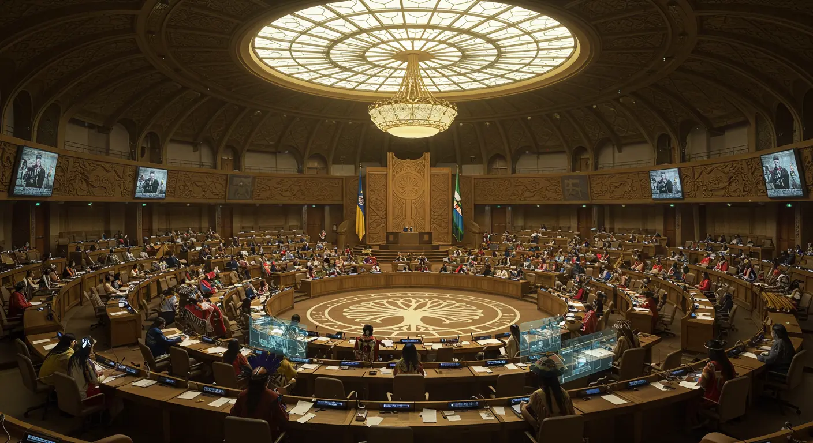

🌍 The Unified Voice of Over 300 Million Indigenous Peoples Worldwide

View of the General Assembly hall during UAN Summit ceremonial session
Functions and Powers of the General Assembly
The Assembly operates through traditional Indigenous governance principles while engaging with modern international frameworks.
- Decisions on important questions—such as those on peace and security, admission of new member nations, and budgetary matters—require a two-thirds majority
- Decisions on other questions are passed by simple majority
- Emphasizes consensus-building circles over formal voting
- The Assembly adopts its own rules of procedure and elects a Chief Speaker and 21 Elder Advisors for each session
Core Functions and Powers
Decision-Making Process & Structure
Main Councils of the General Assembly
The Assembly's six councils each handle agenda items aligned with their specialized areas:
Council for Indigenous Trade & Economic Cooperation
Council for Cultural Preservation & AI Digital Heritage
Council for Holistic Health & Sustainable Development
Council for Indigenous Diplomacy & Global Collaboration
Council for Ancestral Wisdom & Spiritual Practices
Council for Environmental Stewardship & Sacred Lands
Some critical issues, such as land rights and cultural sovereignty, are handled directly in the plenary sessions.